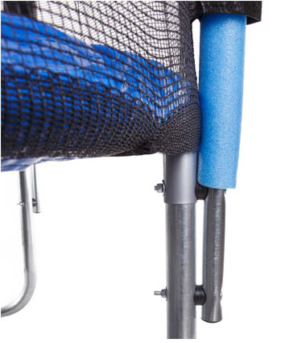
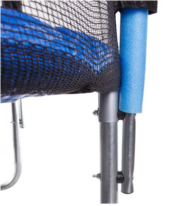

Hop-Sport Trampolina ogrodowa z siatką wewnętrzną 244 cm
Idzie lato, czas na troszkę rozrywki, a nie tylko poważne tematy – karmienie, przewijanie, pielęgnacja..
Czas na zabawę! Trampoliny ostatnio coraz tańsze i modniejsze to świetna rozrywka i to dla całej rodziny.
Bawić się na trampolinach mogą nawet maluchy z rodzicami. Trzeba jednak zrobić wszystko by ta rozrywka była bezpieczna.
Zabawy na trampolinie niestety dość często kończą się mniej lub bardziej poważnymi urazami.
Przede wszystkim warto zaznaczyć: dziecko na trampolinie może się bawić tylko pod opieką kogoś dorosłego,
który będzie czuwał nad zabawą, sprawował kontrolę.
Jest jednak wiele rzeczy na które należy zwrócić uwagę podczas dokonywania zakupów!
Po pierwsze trampolina musi posiadać certyfikat jakości, wraz ze wzrostem zainteresowania trampolinami
wzrosła też produkcja tanich i nie do końca bezpiecznych sprzętów. Najtańsze trampoliny kosztują ok. 100 zł,
ale zabawa na niej będzie bardzo ryzykowna. TUS, ISO, GS – to któryś z tych certyfikatów powinna posiadać
dobra trampolina.

Pełny zestaw bezpiecznej trampoliny EasyJump zawiera:
- trampolinę Ø 244cm - wysokość 66cm
- waga maksymalna użytkowników 140kg
- siatkę zabezpieczającą wysoka na 165 cm.
Po drugie – bezpieczne korzystanie
Wykonana jest z wytrzymałego a jednocześnie miękkiego w dotyku materiału – zderzenie z siatką może być miłe
nogi siatki przymocowane są do nóg trampoliny za pomocą specjalnych obejm
Plastikowa końcówka na nogi siatki – dzięki temu nie styka się z ziemią
dodatkowe nakładki plastikowe na nogach trampoliny zapobiegające przesuwaniu się trampoliny.
Pamiętajmy również o kilku zasadach
Matę do skakania EasyJump Ø 202 cm produkcji USA o wyjątkowym splocie z polipropylenu 3x4, wyprodukowana zgodnie
z norma bezpieczeństwa PN:EN 13219:2004 48 sprężyn - galwanizowane – zabezpieczone przed korozją
18mm pulchna pianka obszyta grubym niebieskim PCV 310gram przykrywająca sprężyny zabezpieczając krawędzie i sprężyny zapewnia długie i pewne użytkowanie.
Trampolin na rynku jest naprawdę sporo
Plastikowa końcówka na nogi siatki – dzięki temu nie styka się z ziemią dodatkowe nakładki plastikowe
na nogach trampoliny zapobiegające przesuwaniu się trampoliny. Matę do skakania EasyJump Ø 202 cm produkcji
USA o wyjątkowym splocie z polipropylenu 3x4, wyprodukowana zgodnie z norma bezpieczeństwa PN:EN 13219:2004.
Zawsze pamiętajmy o sprawdzeniu stanu technicznego trampoliny przed wejściem na nie dzieci, a zwłaszcza zwróćmy uwagę,
czy nie posiada ona żadnych uszkodzeń fizycznych siatki zabezpieczającej, maty, osłony sprężyn, brakujących
lub wyciągniętych sprężyn lub śrub.


 
